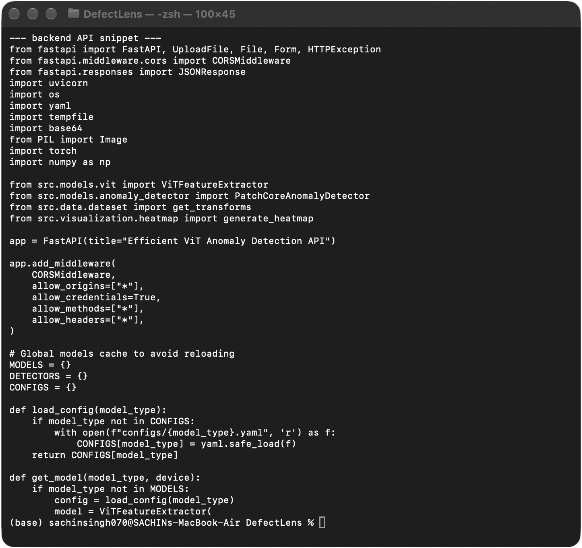

Figure 1. Execution of the anomaly prediction script. This terminal output shows the model classifying a sample, calculating the anomaly score (21.3), processing in ~57ms, and successfully achieving an 88.3% token reduction via MCTF.
Project Title: DefectLens: Efficient ViT-Based Anomaly Detection with Multi-Criteria Token Fusion (MCTF)
Team Number: Team 7
Team Members:
The DefectLens project is a visual anomaly detection system for identifying manufacturing defects. We are using a Vision Transformer (ViT) combined with a PatchCore-style FAISS memory bank. To improve efficiency, we added a Multi-Criteria Token Fusion (MCTF) module that dynamically merges redundant background tokens, which helps reduce inference latency and FLOPs while maintaining accuracy.
Task 5 Part 2 Focus: Building on the data pipelines and core MCTF logic from Part 1, we are now at approximately 50% overall implementation. We have integrated the FAISS memory bank for anomaly scoring, completed the prediction script (which outputs heatmaps and scores), and set up the FastAPI backend to serve these predictions via a REST API.
The complete proposed pipeline operates as follows:
Dataset → Data Preprocessing → [ViT Feature Extraction] → [MCTF Token Reduction] → [FAISS Memory Bank Matching] → [Final Output/Evaluation] → [Backend API & Frontend UI]
The system utilizes the MVTec AD dataset. In the previous phase, we implemented automated downloading, loading, and Torchvision preprocessing (resizing to 224x224 and ImageNet normalization). This infrastructure is actively utilized by our new memory bank and prediction modules.
We have integrated our core models into a working backend. The major completed modules for this milestone are:
PatchCoreAnomalyDetector implemented and actively functioning via predict.py.Code Snippet 1 – Prediction Engine (scripts/predict.py)
with torch.no_grad():
# Forward pass through ViT with MCTF token reduction
feat, mapping = model.extract_patch_features(img_tensor, layer_idx=layer_idx)
# Distance calculation against FAISS memory bank
anomaly_map, image_score = detector.predict(feat, mapping, patch_grid_size=grid_size)
# Compute metrics
inference_ms = (time.perf_counter() - start_time) * 1000
reduction_pct = (1.0 - feat.shape[1] / model.num_patches) * 100
Purpose → How it works → Expected output: This script passes the image through the ViT, uses MCTF to reduce the number of tokens, and queries the FAISS index to create a pixel-level anomaly map. It outputs a prediction score and a localized defect heatmap.
backend/app/main.py.Code Snippet 2 – FastAPI Backend Architecture (backend/app/main.py)
@app.post("/predict")
async def predict(file: UploadFile = File(...), category: str = Form("bottle"), model_type: str = Form("mctf")):
img_pil = Image.open(file.file).convert('RGB')
img_tensor = transform(img_pil).unsqueeze(0).to(device)
# Inference
feat, mapping = model.extract_patch_features(img_tensor, layer_idx=-2)
anomaly_map, image_score = detector.predict(feat, mapping, patch_grid_size=14)
# Generate Heatmaps
vis = generate_heatmap(anomaly_map[0], img_np)
return JSONResponse({
"prediction": "anomalous" if image_score.item() > 25.0 else "normal",
"anomaly_score": float(image_score.item()),
"token_reduction_percent": float(reduction_pct),
"images": { "heatmap": image_to_base64(vis['heatmap']) }
})
Purpose → How it works → Expected output: The FastAPI server handles incoming HTTP POST requests with image files, executes the model inference in memory, converts the output heatmaps to Base64, and returns a comprehensive JSON payload. This decouples our PyTorch logic from the user interface.


Below are the visual outputs generated by predict.py when run on an image from the MVTec AD testing subset (broken_small category).


| Component | Status | Evidence |
|---|---|---|
| Dataset Collection & Loaders | Completed | dataset.py and active data directories |
| MCTF Module & ViT Integration | Completed | mctf.py and 88.3% token reduction verified in logs |
| Memory Bank (FAISS) | Completed | build_memory_bank.py & saved .faiss artifacts |
| Anomaly Scoring & Heatmaps | Completed | predict.py & resulting output overlay images |
| FastAPI Backend | Completed | main.py running successfully on Port 8000 |
| React Frontend UI | Not started | Planned for Task 6 |
| Comprehensive Benchmarking | Not started | Planned for Final Stage |
For the remaining 50% of the project, we will focus on the UI and performance testing:
old_to_new coordinate mapping tensor throughout the ViT blocks.anomaly_detector.py to condense the memory bank while maintaining boundary accuracy.For Task 5 (Implementation Part 2), Team 7 has reached the 50% implementation mark for DefectLens. We have moved past the initial model setup and now have a working anomaly detection pipeline. The system can build FAISS memory banks, run token-fused predictions with lower latency, generate defect heatmaps, and serve everything through a FastAPI backend. We are now ready to start working on the React frontend and the final dataset benchmarking.